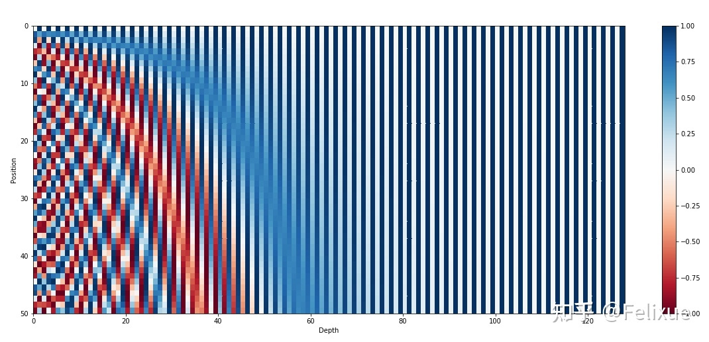
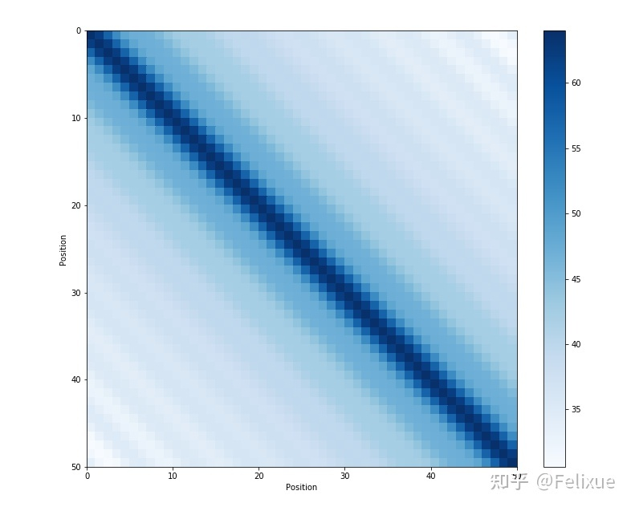
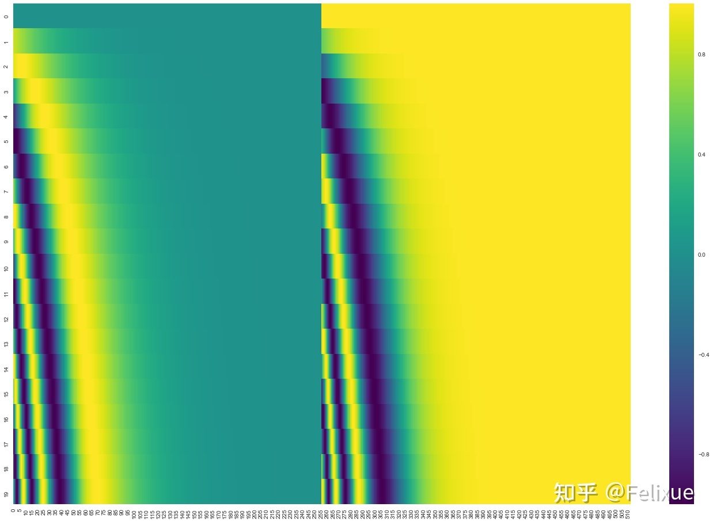
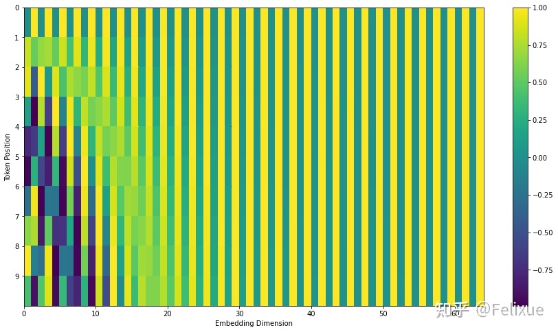

【纯转载】Transformer 中的 positional embedding
关于 positional embedding 的一些问题
重新整理自 Amirhossein Kazemnejad's Blog 。
什么是positional embedding？为什么需要它？
位置和顺序对于一些任务十分重要，例如理解一个句子、一段视频。位置和顺序定义了句子的语法、视频的构成，它们是句子和视频语义的一部分。循环神经网络RNN本质上考虑到了句子中单词的顺序。因为RNN以顺序的方式逐字逐句地解析一个句子，这将把单词的顺序整合到RNN中。
Transformer使用MHSA(Multi-Head Self-Attention)，从而避免使用了RNN的递归方法，加快了训练时间，同时，它可以捕获句子中的长依赖关系，能够应对更长的输入。
当句子中的每个单词同时经过Transformer的Encoder/Decoder堆栈时，模型本身对于每个单词没有任何位置/顺序感 (permutation invariance)。 因此，仍然需要一种方法来将单词的顺序信息融入到模型中。
为了使模型能够感知到输入的顺序，可以给每个单词添加有关其在句子中位置的信息，这样的信息就是位置编码(positional embedding, PE)。
如何设计positional embedding？有什么规则？
一般我们可能想到的方案是：
- 给每一个时间步设定[0,1]范围的一个值，0表示第一个，1表示最后一个。这样做的问题是，我们不确定句子里有多少个单词，不同单词数的句子中相邻单词之间的距离就不固定了。
- 给每一个时间步分配一个数值，例如第一个单词分配“1”，第二个单词分配“2”等等。这样做的问题是，这些值很大，并且实际中遇到的句子可能比训练时见过的句子还要长，这就会导致模型泛化性能变差。
理想情况下PE的设计应该遵循这几个条件：
- 为每个时间步（单词在句子中的位置）输出唯一的编码；
- 即便句子长度不一，句子中两个时间步之间的距离应该是“恒定”的；
- 模型可以轻易泛化到更长的句子上；
- PE必须是确定的。
Attention is all you need中固定类型的PE为什么是这样设计（ sin, cos ）的？
作者设计的这种位置编码的方式非常巧妙。
首先，它不是一个单一的数值，它是关于句子中一个特定位置信息的 d 维的向量。
其次，这种编码没有集成到模型本身上。相反，这个向量用于给每个单词分配一个有关其在句子中位置的信息。换句话说，PE只和输入有关，而和模型无关。
假设 t 是输入序列的一个位置， pt∈Rd 是它对应的编码， d 是维度。定义 f:N→Rd 是产生 pt 的函数，它的形式如下：
pt(i)=f(t)(i):={sin(ωk.t),cos(ωk.t),ifi=2kifi=2k+1
这里 i 是向量的index， k 的引入是为了区分奇偶。其中：
ωk=100002k/d1 由函数定义可以推断出，它的频率随着向量维度递减。(三角函数频率、周期、波长相关知识)。它的波长范围是 [2π,10000⋅2π] ，这意味着它可以编码最长为10000的位置，第1和第10001的位置编码重复。（这个10000也是可以改的，比如1000，100000，具体可能要实验看结果。）PE可以表示为一个向量，其中每个频率包含一对正弦和余弦。
pt=⎣⎢⎢⎢⎢⎢⎢⎢⎢⎢⎢⎢⎢⎢⎢⎢⎢⎡sin(ω1.t)cos(ω1.t)sin(ω2.t)cos(ω2.t)⋮sin(ωd/2.t)cos(ωd/2.t)⎦⎥⎥⎥⎥⎥⎥⎥⎥⎥⎥⎥⎥⎥⎥⎥⎥⎤d×1
现在有两个问题： 1. 这种sines和cosines的组合为什么能够表示位置/顺序？ 假设现在我们想用二进制来表示数字，我们可以观察到不同位置之间的变化率，最后一位在0和1上依次交替，第二低位在每两个数字上交替，以此类推。
0:00001:00012:00103:00114:01005:01016:01107:01118:10009:100110:101011:101112:110013:110114:111015:1111
但是用二进制表示数字在浮点数空间非常浪费空间，所以可以用它们的对应浮点函数 - 正弦函数。下图展示了一个最多50个单词的句子中的每个单词的位置编码，维度是128。每一行都表示一个位置编码向量。对比上面的二进制数字表示，（每一个数字的二进制对应一个位置编码向量）：横向看，降低它们的频率，从红色的的位变为橙色的位；纵向来看，左侧上下变化较大，越向右上下变化差越小。所以实际上，正弦函数等效于二进制表示。

这种正弦曲线位置编码的另一个性质是，相邻时间步的位置编码的距离（点积）是对称的，并且会随着时间很好地衰减。

2. 为什么这种正弦曲线形的位置编码可以轻松允许模型获取相对位置relative positioning？ Attention原文是这么写的:
We chose this function because we hypothesized it would allow the model to easily learn to attend by relative positions , since for any fixed offset k, PEpos+k can be represented as a linear function of PEpos .
为什么这句话成立？这篇博客给了一个完整的证明。这里放一个中文简要整理版（非严格证明）： 求证： 对于每一对对应频率 wk ** 的 sine-cosine 对，有一个线性变换矩阵 ** M∈R2×2 （独立于 t ）满足以下等式:
M.[sin(ωk.t)cos(ωk.t)]=[sin(ωk.(t+ϕ))cos(ωk.(t+ϕ))]
证明： 令 M 是一个 2×2 的矩阵，需要找到 u1,v1,u2,v2 使得：
[u1u2v1v2].[sin(ωk.t)cos(ωk.t)]=[sin(ωk.(t+ϕ))cos(ωk.(t+ϕ))]
左边矩阵向量相乘，右边运用三角函数和角公式：
u1sin(ωk.t)+v1cos(ωk.t)=u2sin(ωk.t)+v2cos(ωk.t)=cos(ωk.ϕ)sin(ωk.t)+sin(ωk.ϕ)cos(ωk.t)−sin(ωk.ϕ)sin(ωk.t)+cos(ωk.ϕ)cos(ωk.t)
于是得到：
u1=cos(ωk.ϕ)u2=−sin(ωk.ϕ)v1=sin(ωk.ϕ)v2=cos(ωk.ϕ)
即矩阵 M 为：
Mϕ,k=[cos(ωk.ϕ)−sin(ωk.ϕ)sin(ωk.ϕ)cos(ωk.ϕ)]
证毕。
可以看到 M 并不依赖 t 。这个证明说明我们可以用 pt 的线性表达来表达任意 ϕ 间隔的 pt+ϕ 。这种性质，使得模型可以很容易获取相对位置。
--------------------------------------------- 为什么PE和WE (word embeddings)是相加(add)，而不是拼接(concatenate)？ 目前这个问题没有理论证明。（？）但是加法相对于拼接减少了模型的参数量，那么上面的问题换个说法就是“PE直接加到WE上是不是有什么缺点？” 这个不一定 。回到上面的位置编码的可视化图，我们会发现：相对于整个embedding来说，只有前面少数dimension是用来存储位置信息的。由于embedding只有128维，不够明显，借用另一个博客的图：

这幅图表示20个单词的512维的位置编码。图中是sine（左）和cosine（右）拼接之前的样子。大部分的维度（全绿/黄）几乎只共享常数1或者-1，换句话说 这些维度都用表示word embedding的信息了 。另外，由于Transformer中PE和WE是从头开始训练的，因此参数的设置方式可能是单词的语义不会存储在前几个维度中，以免干扰位置编码。（这也是这个问题的解： PE是如何训练的？或者说如何让模型知道这些embeddings是position信息？ ）从这个角度来看，Transformer或许可以分离语义信息和位置信息。这样的话，考虑分类PE和WE可能就不会是一个优点了，可能加法提供了额外的可以学习的特征。上面那幅图sine和cosine合起来大概是这样（部分图）：

--------------------------------------------- 为什么sine和cosine都被用到了？ 只用它们的组合才能用sin(x)和cos(x)的组合线性表示sin(x+k), cos(x+k)。--------------------------------------------- 固定PE和可学习PE比孰优孰劣？ 目前没有明显的差距，多数论文都会做相关的ablation study。--------------------------------------------- 位置信息到高层后信息会丢失吗？ 不会，因为Transformer结构有残差连接。
positional embedding是如何训练的？
reddit 上ID为 pappypapaya 的这个人提出了一个比较有意思的说法，大概意思如下：
在注意力机制中，我们一般输入两个embedding x和y，将 x 经过 Query 转换矩阵 Q，将 y 经过 Key 转换矩阵 K，然后比较Query和Key向量的点积相似度。所以，我们一般需要计算Qx和Ky之间的点积，我们将其写为：
(Qx)T(Ky)=xT(QTKy)
因此，我们只需要等效学习一个联合Query-Key的转换矩阵 QTK ，即可将辅助输入 y 转换到一个可以与 x 比较的新空间。
通过分别向 x 和 y 添加位置编码 e 和 f，我们实际上将点积更改为:
(Q(x+e))T(K(y+f))=(Qx+Qe)T(Ky+Kf)=(Qx)TKy+(Qx)TKf+(Qe)TKy+(Qe)TKf=xT(QTKy)+xT(QTKf)+eT(QTKy)+eT(QTKf)
原始的 xT(QTKy) 问的是：“ 对于给定的单词 y ，我们应该对单词 x 给予多大的关注 ”。现在多出来三项：
- xT(QTKf) ： "给定单词 y 的位置 f， 我们应该对单词 x 给予多少关注"；
- eT(QTKy) ： "给定单词 y ，我们应该对单词 x 的位置 e 给予多少关注"；
- eT(QTKf) ： "给定单词 y 的位置 f， 我们应该对单词 x的位置e 给予多少关注"。
本质上，具有位置编码的学习变换矩阵 QTK 必须同时完成所有这四个任务。这部分可能看起来效率低下，因为从直觉上讲，应该在 QTK 同时出色地完成四个任务的能力之间进行权衡。
但是，pappypapaya的猜测是，由于高维满足一些近似正交条件，因此当我们强制 QTK 完成所有这四个任务时，实际上并没有权衡取舍。直觉是，在高维中随机选择的矢量几乎总是近似正交的。没有理由认为单词向量和位置编码向量之间有任何关联。如果 word embedding 形成一个较小维的子空间，而 positional embedding 形成另一个较小维的子空间，那么这两个子空间本身可能近似正交，因此可以通过学习得到的 QTK 对这些子空间独立进行近似变换（因为它们基本上存在于高维空间中的不同轴上）。不确定这个想法是否正确，但是从直觉上看是可能的。
如果为true，那么可以解释为什么 positional embedding 通过 addition 结合而不是 concatenation 。Concatenation 可以确保 position 维度与 word 维度正交。但猜测，由于这些 embedding 的 size 非常大，因此即使是 addition 也可以免费获得近似的正交性，而不必花费 concatenation 的代价（有许多参数需要学）。